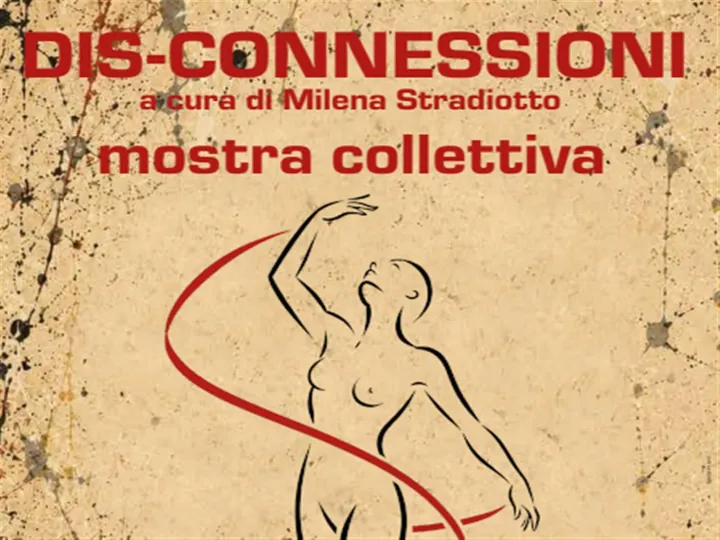

da sab 19 set a sab 31 ott
Arte in villa
Giunge alla VII edizione l’evento “ Arte in Villa - Artisti tra Monte Grappa, Brenta e Piave – Emozioni e colori del nostro territorio ”, rassegna di arte promossa e organizzata dal Comune di San Zenone degli Ezzelini in collaborazione con l’Associazione Pro Loco APS e i comuni…
 Indicazioni
Indicazioni
- Costi e prenotazioni
- Costo non indicato · Prenotazione non indicata
- Programma
- Programma da verificare. Apri la fonte ufficiale per orari e possibili aggiornamenti.
- In caso di maltempo
- Nessuna indicazione specifica pubblicata.
- Note
- Acquisito automaticamente dalla fonte.
L’EVENTO
Descrizione completa
Giunge alla VII edizione l’evento “ Arte in Villa - Artisti tra Monte Grappa, Brenta e Piave – Emozioni e colori del nostro territorio ”, rassegna di arte promossa e organizzata dal Comune di San Zenone degli Ezzelini in collaborazione con l’Associazione Pro Loco APS e i comuni di Altivole, Asolo, Borso del Grappa, Castelcucco, Cavaso del Tomba, Fonte, Maser, Monfumo, Mussolente, Pieve del Grappa, Possagno e Romano d’Ezzelino.
Alla mostra d’Arte collettiva esporranno, presso le sale di Villa Marini Rubelli in San Zenone degli Ezzelini, alcuni artisti locali residenti nei Comuni che hanno aderito al Progetto.
L’immagine scelta per questa edizione è una stilizzazione grafica di una scultura di Piergiorgio Rebesco (1936-2020), esposta per l’occasione nell’atrio della Villa. Tale scelta nasce dalla volontà di omaggiare lo scultore sanzenonese, fonte di ispirazione per altri artisti, a 90 anni dalla nascita.
Il soggetto rappresentato, una ginnasta che si svincola tra i nastri e le connessioni che la circondano, diventa così simbolo del titolo della mostra: “ Dis-connessioni”. Tale termine rimanda a più concetti legati all’espressione artistica, in particolare alla volontà e capacità di staccarsi da dei modelli omologati, allineati e preconfezionati per proporre un’interpretazione e una visione personale della realtà circostante, ma evoca allo stesso tempo il desiderio di fuggire dai condizionamenti che la vita di ogni giorno impone, per trovare una propria serenità e equilibrio in uno spazio altro e salvifico grazie all’Arte.
Durante tale periodo saranno organizzati diversi eventi paralleli tra cui un concerto, vari laboratori per adulti e bambini e la presentazione di un libro.
IL PROGRAMMA
Programma e orari
Appuntamenti raccolti dalle fonti elencate. Dove manca un orario, non è ancora disponibile in questa scheda.
Programma pubblicato
- 2026-09-19 — 2026-10-31 · 09:30:00
- 2026-09-19 — 2026-10-31 · 15:00:00
INFORMAZIONI UTILI
Prima di partire
- Controllare la fonte prima di partire.
ORGANIZZAZIONE